Leyendo sobre las hazañas de Lenoir , el joven comerciante de Colonia , Nikolaus August Otto ( 1832 - 1891 ) se propuso mejorar aquel motor.
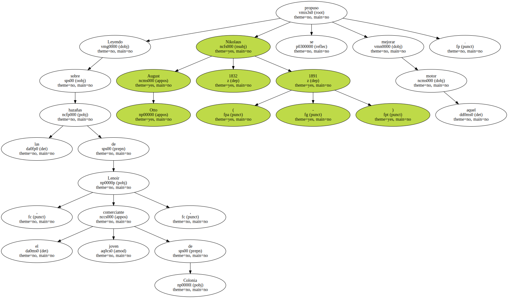Tras muchas pruebas y retoques , registró varias patentes y obtuvo sucesivos éxitos con sus motores , que vendía a millares , especialmente a las pequeñas industrias para las que una máquina de vapor era demasiado grande.
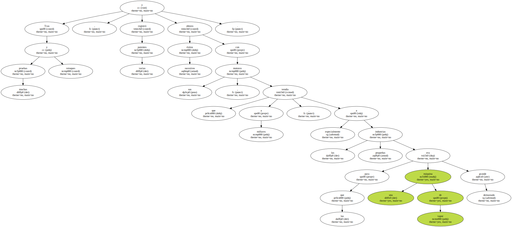La popularidad del Motor Otto llevó a la fundación , en 1872 , de la firma Gas-Motoren-Fabrik Deutz A. G. , en la que participaban los brillantes ingenieros Gottlieb Daimler y Wilhelm Maybach.
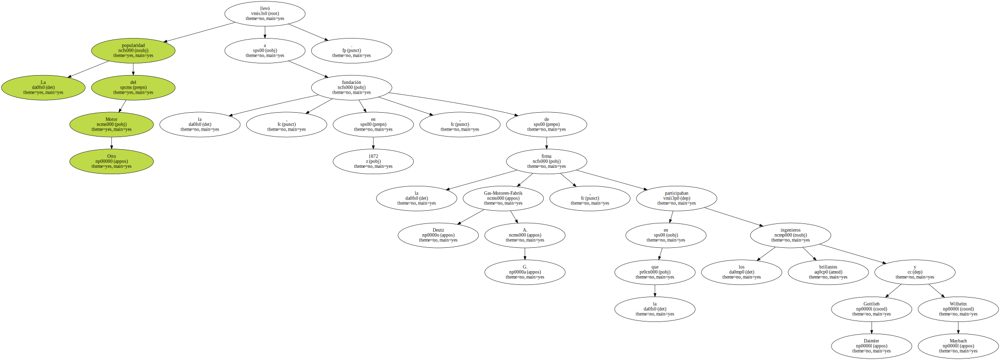En colaboración con Otto desarrollaron el que se llamaría motor de cuatro tiempos , por las cuatro carreras sucesivas del émbolo ( aspiración , compresión , explosión y expulsión ) y que obtuvo un arrollador triunfo en la Exposición Universal de París de 1878.
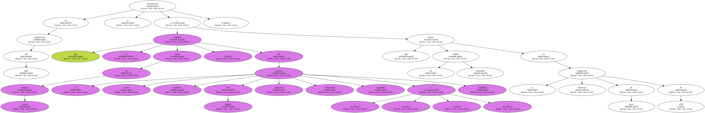Aunque rigurosamente sería un ingeniero de Mecklenburgo llamado Sigfried Marcus el que presentaría en Viena el primer automóvil conocido movido por un motor de gas , es a Gottlieb Daimler ( 1834 - 1900 ) y a su fiel colaborador Maybach a quien se deben los primeros esfuerzos continuados para el desarrollo y producción de vehículos a motor.
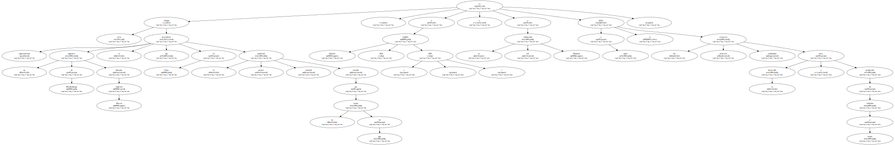El primero de éstos fue una motocicleta patentada en 1885.
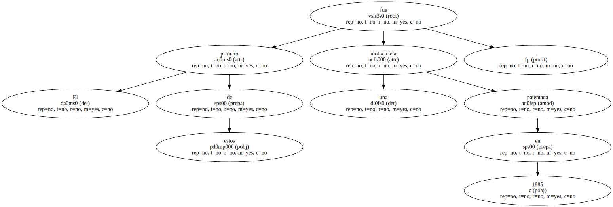En 1887 circuló por primera vez un carruaje de cuatro ruedas hecho por Daimler a 18 kilómetros por hora , y en 1891 el primer camión con dos marchas delante y una atrás.
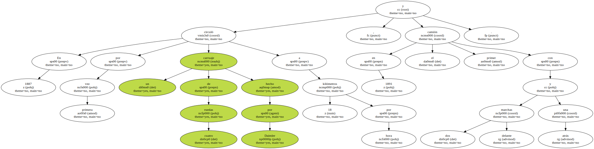Daimler no era el único.
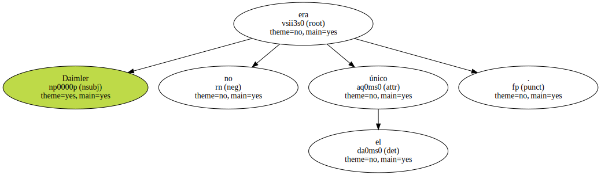Por la misma época circulaba por las calles de Mannheim , también en Alemania , un coche mecánico de tres ruedas diseñado por Karl Friedrich Benz ( 1844 - 1929 ) en el que - el chasis y el motor habían sido concebidos como un todo orgánico - ; es decir , un verdadero automóvil.
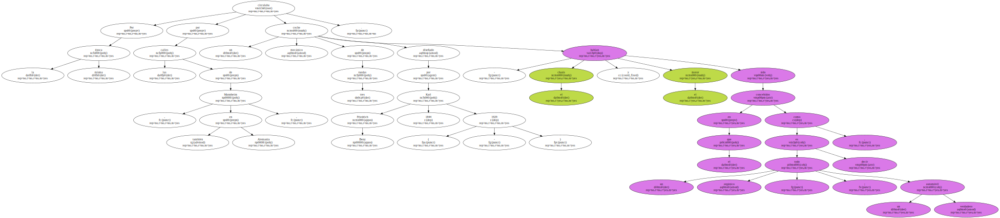Le faltaba por resolver , sin embargo , el mecanismo de la dirección de dos ruedas ; por eso era todavía un triciclo.
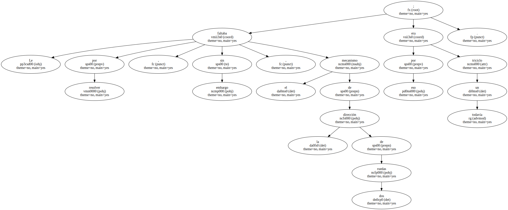En pocos años los nuevos automóviles se extendían por todas partes , y en Francia especialmente se celebraban las primeras carreras en las que triunfaron los autos de Daimler.
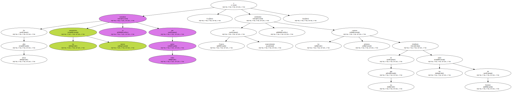Al borde del siglo XX , en el año 1900 , crean Daimler , su hijo Paul y Wilhelm Maybach , un automóvil que reunía todos los adelantos técnicos del momento : 35 CV de potencia , carburador de inyección y neumáticos , un invento reciente de los hermanos Michelín de París.
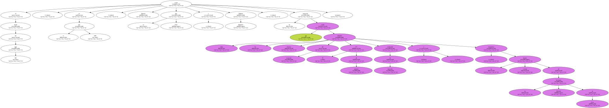En honor de la hija del gran deportista Emil Jellinek , le ponen su nombre : Mercedes.

Daimler muere aquel mismo año.
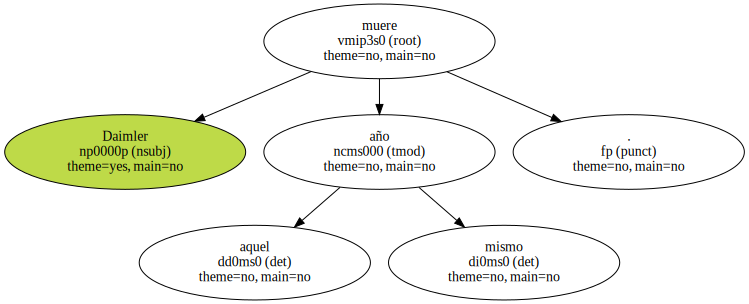